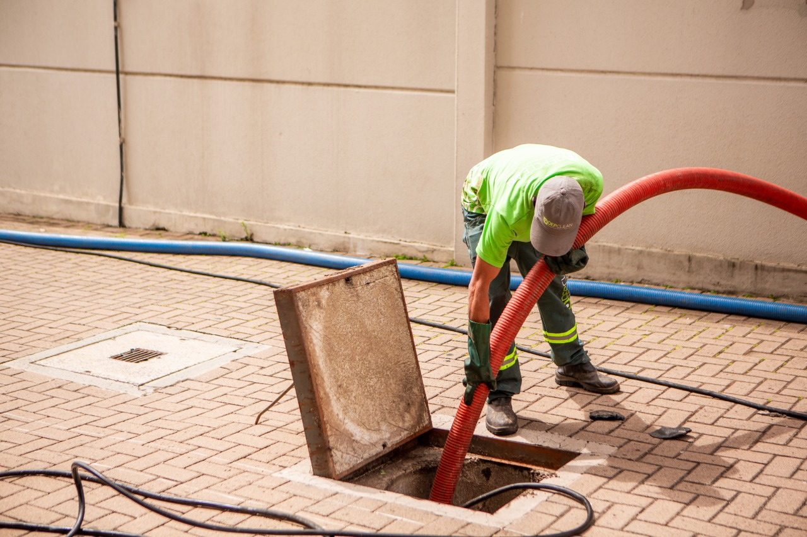
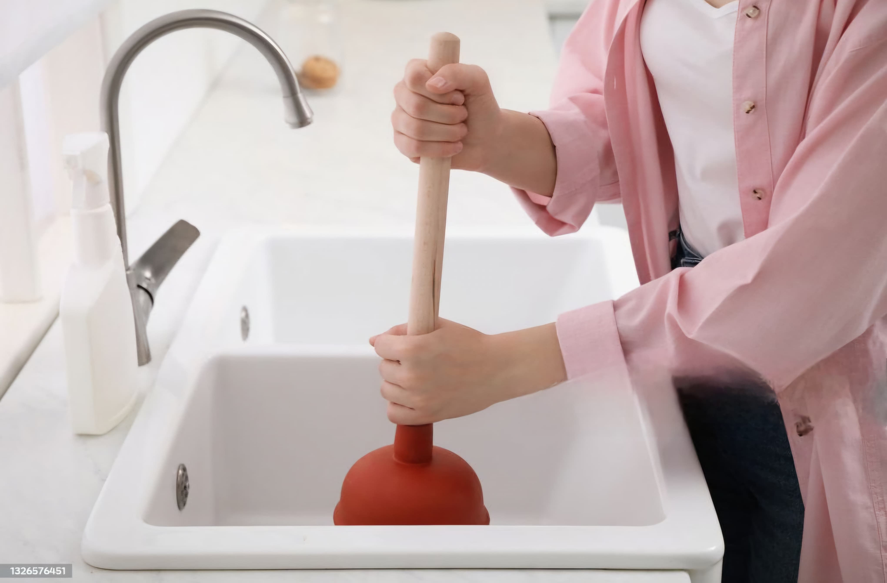

Serviços Desempenhados pela MRL
O Que é Hidrojateamento, Dedetização
e Outros Serviços Essenciais Para Sua Casa

Quando falamos de limpeza e manutenção residencial ou comercial, diversos serviços especializados garantem a higiene, o bom funcionamento e a prevenção de problemas sérios. Neste artigo, você vai entender o que é cada um deles, como funcionam, e por que são tão importantes.
Hidrojateamento: o poder da água sob pressão
O hidrojateamento é um processo de limpeza que utiliza jatos de água em altíssima pressão para remover sujeiras incrustadas, resíduos sólidos e obstruções em superfícies ou tubulações. Ele é muito usado para limpar canos, calhas, galerias pluviais e até fachadas.
Hidrojateamento de esgoto cloacal
O hidrojateamento de esgoto cloacal é uma aplicação específica dessa técnica em redes de esgoto doméstico ou predial. É ideal para remover acúmulo de gordura, fezes, papel e outros materiais que entopem os encanamentos. Esse serviço previne o retorno de esgoto para dentro de casas ou estabelecimentos.
Dedetização: proteção contra pragas
A dedetização é o conjunto de técnicas para eliminar e controlar pragas urbanas como baratas, ratos, formigas, cupins e mosquitos. Utiliza-se produtos químicos regulamentados para garantir segurança à saúde humana e dos animais de estimação. É essencial para manter ambientes saudáveis.
Desentupidora de pias, ralos e esgoto
Empresas desentupidoras atuam no desentupimento de pias, ralos, vasos sanitários e redes de esgoto. Utilizam ferramentas específicas (como sondas, máquinas rotativas ou o próprio hidrojateamento) para quebrar ou remover obstruções e devolver o fluxo normal à tubulação.
Sanitização de ambientes
A sanitização é um processo mais profundo que a limpeza comum. Utiliza produtos específicos para eliminar vírus, bactérias e fungos. É muito procurada em épocas de surtos de doenças ou para garantir ambientes estéreis em clínicas, empresas e residências.
Manutenção preventiva de encanamentos
A manutenção preventiva em encanamentos, fossas e caixas de gordura evita entupimentos, transbordamentos e gastos emergenciais. Pode incluir inspeções com câmeras, testes de pressão e pequenos reparos antes que o problema se agrave.
Sucção de fossa séptica
A sucção de fossa séptica consiste na retirada dos resíduos acumulados dentro da fossa por meio de caminhões a vácuo. O serviço deve ser feito periodicamente, conforme a capacidade da fossa e o número de usuários, para evitar transbordamento e contaminações.
Desentupimento em geral
O desentupimento é o serviço voltado para restaurar o fluxo de água e esgoto, removendo obstruções em qualquer parte da rede hidráulica. Pode envolver técnicas manuais, mecânicas ou hidrojateamento.
Limpeza de caixa de gordura
A caixa de gordura é um reservatório que retém óleos e gorduras da pia da cozinha, evitando que cheguem ao esgoto e causem entupimentos. Sua limpeza periódica é essencial para o bom funcionamento da rede hidráulica e prevenção de odores desagradáveis.
Dicas Para Evitar Entupimentos Na Sua Casa
- Evite jogar óleo e gordura na pia:
Armazene o óleo usado em recipientes e descarte corretamente. - Use peneiras em ralos e pias:
Elas impedem que restos de comida, cabelo e detritos entrem no encanamento. - Não jogue papel higiênico no vaso sanitário:
Mesmo os "biodegradáveis" podem causar acúmulos. - Limpe a caixa de gordura regularmente:
Dependendo do uso, o ideal é a cada 6 meses. - Faça manutenção preventiva:
Uma inspeção anual em tubulações e fossas pode evitar problemas maiores. - Tenha o contato de uma empresa especializada:
Em emergências, o atendimento rápido evita danos estruturais e mau cheiro. - Evite produtos corrosivos em excesso:
O uso frequente de soda cáustica, por exemplo, pode danificar encanamentos. - Tenha rotina de dedetização e sanitização:
Isso evita infestações e promove saúde para todos da casa.